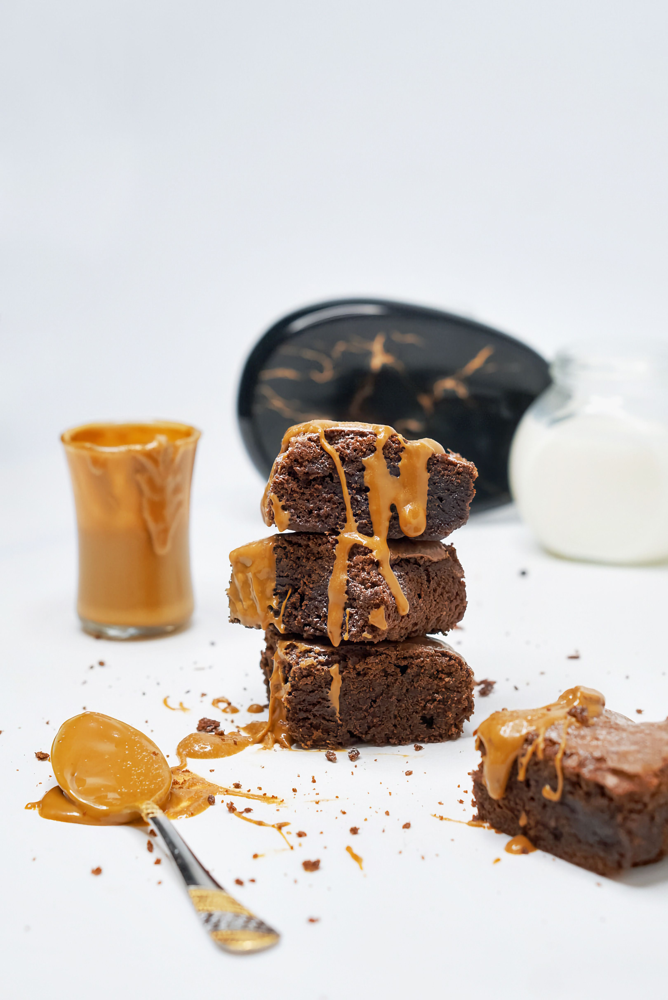

Brownies

Description
Brownies are a rich, baked chocolate dessert named for their deep brown color. They are a beloved cross between a dense cake and a soft fudge, traditionally baked in a square pan and cut into bars.
Ingredients
- Chocolate Base:
- Unsalted Butter: ½ cup (115g)
- Dark Chocolate Chunks or Chips: ½ cup (approx. 100g)
- Cocoa Powder: ⅓ cup (unsweetened)
- Dry & Wet Ingredients:
- All-Purpose Flour (Maida): ½ cup
- Granulated Sugar: 1 cup
- Eggs: 2 large (or substitute with ½ cup condensed milk / ¼ cup yogurt for eggless)
- Vanilla Extract: 1 tsp
- Salt: ¼ tsp
- Chocolate Chips (Optional): ½ cup for extra texture
Steps
- Melt Chocolate & Butter:
- Pre-heat your oven to 180°C (350°F) and line an 8x8 inch square baking pan with parchment paper.
- Combine the butter and dark chocolate chunks in a heatproof bowl.
- Melt over a double boiler or microwave in 30-second bursts, stirring until smooth and glossy.
- Whip Eggs and Sugar for Crackly Top:
- In a separate bowl, vigorously whisk the eggs (or egg substitute) and sugar together for 2–3 minutes until slightly pale and foamy. This step creates the shiny, crackly crust.
- Whisk in the vanilla extract, then slowly pour in the warm melted chocolate-butter mixture while whisking continuously.
- Fold Dry Ingredients:
- Sift the flour, cocoa powder, and salt into the wet batter.
- Gently fold with a spatula just until the flour disappears. Do not overmix.
- Stir in extra chocolate chips if using, then pour the batter into the lined baking pan and smooth the top.
- Bake and Cool
- Bake at 180°C (350°F) for 25-28 minutes.
- Check with a toothpick inserted into the center: it should come out with a few moist crumbs, not wet batter.
- Cool completely in the pan for at least 30-45 minutes before slicing into squares.
Home